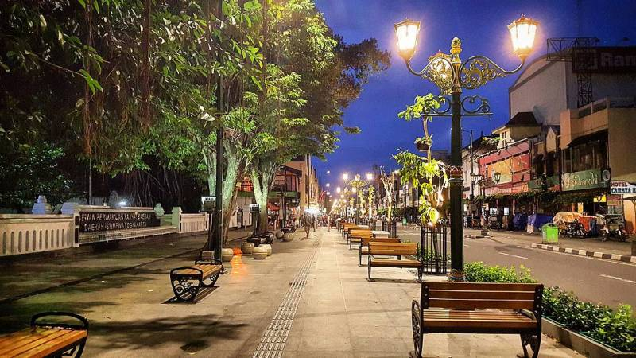

Malioboro

Wisatawan yang datang ke Jogja tidak akan pernah melewatkan Malioboro. Malioboro terletak di tengah Kota Jogja. Di tempat ini wisatawan bisa berjalan-jalan sambil menikmati pemandangan kota. Wisatawan juga bisa berbelanja karena ada banyak jajaran pedagang di trotoar.
Selain itu, ada juga warung-warung makanan yang menyediakan makanan ringan khas Jogja seperti kopi jos atau makanan lain seperti penyetan. Malioboro bisa dikunjungi setiap hari pada jam berapapun.